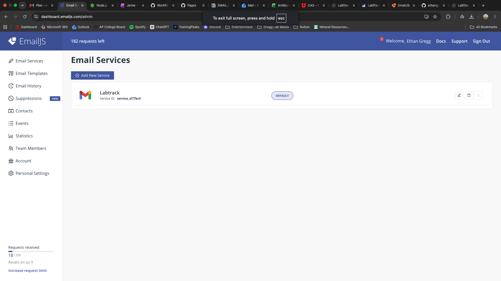
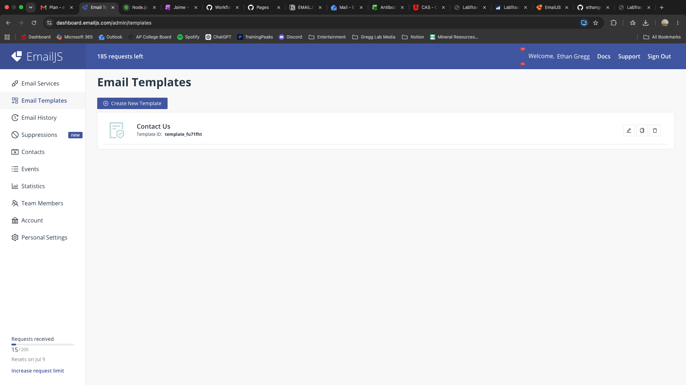
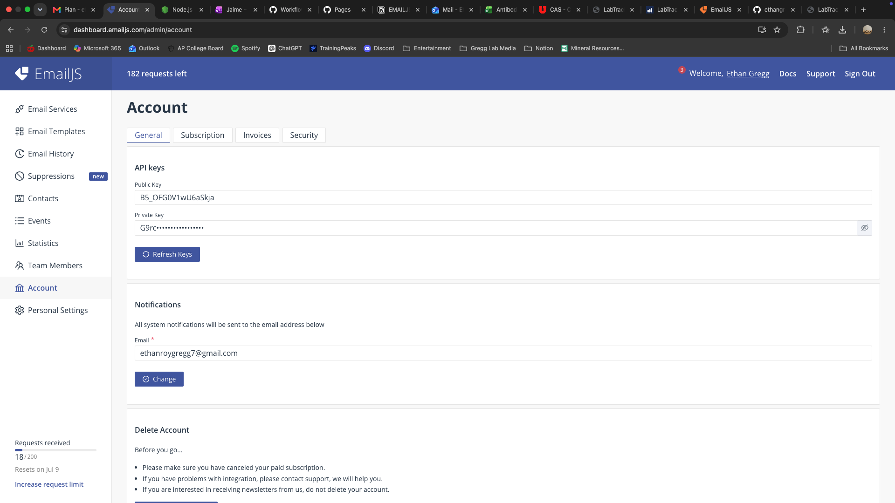

Follow these steps to get LabTrack set up on your phone or computer. It takes about 10 minutes.
service_xxxxxxx
Lab Order Request - {{lab_name}}{{order_list}}template_xxxxxxx

service_) into the Service ID field.template_) into the Template ID field.Item Name
Company
Catalog #
Notes
Preset Quantity
Preset Unit